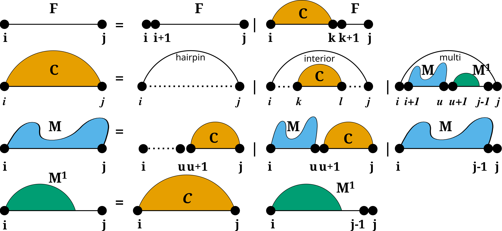
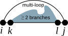

Constraining the RNA folding grammar¶
Overview¶
This module provides general functions that allow for an easy control of constrained secondary structure prediction and evaluation. More…
// global functions void vrna_constraints_add ( vrna_fold_compound_t* vc, const char* constraint, unsigned int options ) void vrna_message_constraint_options (unsigned int option) void vrna_message_constraint_options_all (void) // macros #define VRNA_CONSTRAINT_FILE #define VRNA_CONSTRAINT_SOFT_MFE #define VRNA_CONSTRAINT_SOFT_PF #define VRNA_DECOMP_EXT_EXT #define VRNA_DECOMP_EXT_EXT_EXT #define VRNA_DECOMP_EXT_EXT_STEM #define VRNA_DECOMP_EXT_EXT_STEM1 #define VRNA_DECOMP_EXT_STEM #define VRNA_DECOMP_EXT_STEM_EXT #define VRNA_DECOMP_EXT_STEM_OUTSIDE #define VRNA_DECOMP_EXT_UP #define VRNA_DECOMP_ML_COAXIAL #define VRNA_DECOMP_ML_COAXIAL_ENC #define VRNA_DECOMP_ML_ML #define VRNA_DECOMP_ML_ML_ML #define VRNA_DECOMP_ML_ML_STEM #define VRNA_DECOMP_ML_STEM #define VRNA_DECOMP_ML_UP #define VRNA_DECOMP_PAIR_HP #define VRNA_DECOMP_PAIR_IL #define VRNA_DECOMP_PAIR_ML
Detailed Documentation¶
Secondary Structure constraints can be subdivided into two groups:
- Hard constraints , and
- Soft constraints .
While Hard-Constraints directly influence the production rules used in the folding recursions by allowing, disallowing, or enforcing certain decomposition steps, Soft-constraints on the other hand are used to change position specific contributions in the recursions by adding bonuses/penalties in form of pseudo free energies to certain loop configurations.
Secondary structure constraints are always applied at decomposition level, i.e. in each step of the recursive structure decomposition, for instance during MFE prediction. Below is a visualization of the decomposition scheme

For Hard constraints the following option flags may be used to constrain the pairing behavior of single, or pairs of nucleotides:
- VRNA_CONSTRAINT_CONTEXT_EXT_LOOP - Hard constraints flag, base pair in the exterior loop.
- VRNA_CONSTRAINT_CONTEXT_HP_LOOP - Hard constraints flag, base pair encloses hairpin loop.
- VRNA_CONSTRAINT_CONTEXT_INT_LOOP - Hard constraints flag, base pair encloses an interior loop.
- VRNA_CONSTRAINT_CONTEXT_INT_LOOP_ENC - Hard constraints flag, base pair encloses a multi branch loop.
- VRNA_CONSTRAINT_CONTEXT_MB_LOOP - Hard constraints flag, base pair is enclosed in an interior loop.
- VRNA_CONSTRAINT_CONTEXT_MB_LOOP_ENC - Hard constraints flag, base pair is enclosed in a multi branch loop.
- VRNA_CONSTRAINT_CONTEXT_ENFORCE - Hard constraint flag to indicate enforcement of constraints.
- VRNA_CONSTRAINT_CONTEXT_NO_REMOVE - Hard constraint flag to indicate not to remove base pairs that conflict with a given constraint.
- VRNA_CONSTRAINT_CONTEXT_ALL_LOOPS - Constraint context flag indicating any loop context.
However, for Soft constraints we do not allow for simple loop type dependent constraining. But soft constraints are equipped with generic constraint support. This enables the user to pass arbitrary callback functions that return auxiliary energy contributions for evaluation the evaluation of any decomposition.
The callback will then always be notified about the type of decomposition that is happening, and the corresponding delimiting sequence positions. The following decomposition steps are distinguished, and should be captured by the user’s implementation of the callback:
- VRNA_DECOMP_PAIR_HP - Flag passed to generic softt constraints callback to indicate hairpin loop decomposition step.
- VRNA_DECOMP_PAIR_IL - Indicator for interior loop decomposition step.
- VRNA_DECOMP_PAIR_ML - Indicator for multibranch loop decomposition step.
- VRNA_DECOMP_ML_ML_ML - Indicator for decomposition of multibranch loop part.
- VRNA_DECOMP_ML_STEM - Indicator for decomposition of multibranch loop part.
- VRNA_DECOMP_ML_ML - Indicator for decomposition of multibranch loop part.
- VRNA_DECOMP_ML_UP - Indicator for decomposition of multibranch loop part.
- VRNA_DECOMP_ML_ML_STEM - Indicator for decomposition of multibranch loop part.
- VRNA_DECOMP_ML_COAXIAL - Indicator for decomposition of multibranch loop part.
- VRNA_DECOMP_EXT_EXT - Indicator for decomposition of exterior loop part.
- VRNA_DECOMP_EXT_UP - Indicator for decomposition of exterior loop part.
- VRNA_DECOMP_EXT_STEM - Indicator for decomposition of exterior loop part.
- VRNA_DECOMP_EXT_EXT_EXT - Indicator for decomposition of exterior loop part.
- VRNA_DECOMP_EXT_STEM_EXT - Indicator for decomposition of exterior loop part.
- VRNA_DECOMP_EXT_STEM_OUTSIDE - Indicator for decomposition of exterior loop part.
- VRNA_DECOMP_EXT_EXT_STEM - Indicator for decomposition of exterior loop part.
- VRNA_DECOMP_EXT_EXT_STEM1 - Indicator for decomposition of exterior loop part.
Simplified interfaces to the soft constraints framework can be obtained by the implementations in the submodules
- SHAPE reactivity data and
- ligands.
An implementation that generates soft constraints for unpaired nucleotides by minimizing the discrepancy between their predicted and expected pairing probability is available in submodule Generate soft constraints from data .
Global Functions¶
void vrna_constraints_add ( vrna_fold_compound_t* vc, const char* constraint, unsigned int options )
Use this function to add/update the hard/soft constraints The function allows for passing a string ‘constraint’ that can either be a filename that points to a constraints definition file or it may be a pseudo dot-bracket notation indicating hard constraints. For the latter, the user has to pass the VRNA_CONSTRAINT_DB option. Also, the user has to specify, which characters are allowed to be interpreted as constraints by passing the corresponding options via the third parameter.
The following is an example for adding hard constraints given in pseudo dot-bracket notation. Here, vc is the vrna_fold_compound_t object, structure is a char array with the hard constraint in dot-bracket notation, and enforceConstraints is a flag indicating whether or not constraints for base pairs should be enforced instead of just doing a removal of base pair that conflict with the constraint.
unsigned int constraint_options = VRNA_CONSTRAINT_DB_DEFAULT; if (enforceConstraints) constraint_options |= VRNA_CONSTRAINT_DB_ENFORCE_BP; if (canonicalBPonly) constraint_options |= VRNA_CONSTRAINT_DB_CANONICAL_BP; vrna_constraints_add(fc, (const char *)cstruc, constraint_options);
In constrat to the above, constraints may also be read from file:
vrna_constraints_add(fc, constraints_file, VRNA_OPTION_DEFAULT);
Parameters:
| vc | The fold compound |
| constraint | A string with either the filename of the constraint definitions or a pseudo dot-bracket notation of the hard constraint. May be NULL. |
| options | The option flags |
See also:
vrna_hc_init() , vrna_hc_add_up() , vrna_hc_add_up_batch() , vrna_hc_add_bp() , vrna_sc_init() , vrna_sc_set_up() , vrna_sc_set_bp() , vrna_sc_add_SHAPE_deigan() , vrna_sc_add_SHAPE_zarringhalam() , vrna_hc_free() , vrna_sc_free() , VRNA_CONSTRAINT_DB , VRNA_CONSTRAINT_DB_DEFAULT , VRNA_CONSTRAINT_DB_PIPE , VRNA_CONSTRAINT_DB_DOT , VRNA_CONSTRAINT_DB_X , VRNA_CONSTRAINT_DB_ANG_BRACK , VRNA_CONSTRAINT_DB_RND_BRACK , VRNA_CONSTRAINT_DB_INTRAMOL , VRNA_CONSTRAINT_DB_INTERMOL , VRNA_CONSTRAINT_DB_GQUAD
vrna_hc_add_from_db() , vrna_hc_add_up() , vrna_hc_add_up_batch() vrna_hc_add_bp_unspecific(), vrna_hc_add_bp()
void vrna_message_constraint_options (unsigned int option)
Currently available options are:
VRNA_CONSTRAINT_DB_PIPE (paired with another base)
VRNA_CONSTRAINT_DB_DOT (no constraint at all)
VRNA_CONSTRAINT_DB_X (base must not pair)
VRNA_CONSTRAINT_DB_ANG_BRACK (paired downstream/upstream)
VRNA_CONSTRAINT_DB_RND_BRACK (base i pairs base j)
pass a collection of options as one value like this:
vrna_message_constraints(option_1 | option_2 | option_n)
Parameters:
| option | Option switch that tells which constraint help will be printed |
void vrna_message_constraint_options_all (void)
Macros¶
#define VRNA_CONSTRAINT_FILE
Deprecated Use 0 instead!
See also:
#define VRNA_CONSTRAINT_SOFT_MFE
#define VRNA_CONSTRAINT_SOFT_PF
#define VRNA_DECOMP_EXT_EXT
This flag notifies the soft or hard constraint callback function that the current decomposition step evaluates an exterior loop part in the interval \([i:j]\) , which will be decomposed into a (usually) smaller exterior loop part \([k:l]\) .
#define VRNA_DECOMP_EXT_EXT_EXT
This flag notifies the soft or hard constraint callback function that the current decomposition step evaluates an exterior loop part in the interval \([i:j]\) , which will be decomposed into two exterior loop parts \([i:k]\) and \([l:j]\) .
#define VRNA_DECOMP_EXT_EXT_STEM
This flag notifies the soft or hard constraint callback function that the current decomposition step evaluates an exterior loop part in the interval \([i:j]\) , which will be decomposed into an exterior loop part \([i:k]\) , and a stem branching off with base pair \((l,j)\) .
#define VRNA_DECOMP_EXT_EXT_STEM1
This flag notifies the soft or hard constraint callback function that the current decomposition step evaluates an exterior loop part in the interval \([i:j]\) , which will be decomposed into an exterior loop part \([i:k]\) , and a stem branching off with base pair \((l,j-1)\) .
#define VRNA_DECOMP_EXT_STEM
This flag notifies the soft or hard constraint callback function that the current decomposition step evaluates an exterior loop part in the interval \([i:j]\) , which will be considered a stem with enclosing pair \((k,l)\) .
#define VRNA_DECOMP_EXT_STEM_EXT
This flag notifies the soft or hard constraint callback function that the current decomposition step evaluates an exterior loop part in the interval \([i:j]\) , which will be decomposed into a stem branching off with base pair \((i,k)\) , and an exterior loop part \([l:j]\) .
#define VRNA_DECOMP_EXT_STEM_OUTSIDE
#define VRNA_DECOMP_EXT_UP
This flag notifies the soft or hard constraint callback function that the current decomposition step evaluates an exterior loop part in the interval \([i:j]\) , which will be considered as an exterior loop component consisting of only unpaired nucleotides.
#define VRNA_DECOMP_ML_COAXIAL
This flag notifies the soft or hard constraint callback function that the current decomposition step evaluates a multibranch loop part in the interval \([i:j]\) , where two stems with enclosing pairs \((i,k)\) and \((l,j)\) are coaxially stacking onto each other.
#define VRNA_DECOMP_ML_COAXIAL_ENC
This flag notifies the soft or hard constraint callback function that the current decomposition step evaluates a multibranch loop part in the interval \([i:j]\) , where two stems with enclosing pairs \((i,k)\) and \((l,j)\) are coaxially stacking onto each other.
#define VRNA_DECOMP_ML_ML
This flag notifies the soft or hard constraint callback function that the current decomposition step evaluates a multibranch loop part in the interval \([i:j]\) , which will be decomposed into a (usually) smaller multibranch loop part \([k:l]\) .
#define VRNA_DECOMP_ML_ML_ML
This flag notifies the soft or hard constraint callback function that the current decomposition step evaluates a multibranch loop part in the interval \([i:j]\) , which will be decomposed into two multibranch loop parts \([i:k]\) , and \([l:j]\) .
#define VRNA_DECOMP_ML_ML_STEM
This flag notifies the soft or hard constraint callback function that the current decomposition step evaluates a multibranch loop part in the interval \([i:j]\) , which will decomposed into a multibranch loop part \([i:k]\) , and a stem with enclosing base pair \((l,j)\) .
#define VRNA_DECOMP_ML_STEM
This flag notifies the soft or hard constraint callback function that the current decomposition step evaluates a multibranch loop part in the interval \([i:j]\) , which will be considered a single stem branching off with base pair \((k,l)\) .
#define VRNA_DECOMP_ML_UP
This flag notifies the soft or hard constraint callback function that the current decomposition step evaluates a multibranch loop part in the interval \([i:j]\) , which will be considered a multibranch loop part that only consists of unpaired nucleotides.
#define VRNA_DECOMP_PAIR_HP
This flag notifies the soft or hard constraint callback function that the current decomposition step evaluates a hairpin loop enclosed by the base pair \((i,j)\) .
#define VRNA_DECOMP_PAIR_IL
This flag notifies the soft or hard constraint callback function that the current decomposition step evaluates an interior loop enclosed by the base pair \((i,j)\) , and enclosing the base pair \((k,l)\) .
#define VRNA_DECOMP_PAIR_ML
This flag notifies the soft or hard constraint callback function that the current decomposition step evaluates a multibranch loop enclosed by the base pair \((i,j)\) , and consisting of some enclosed multi loop content from k to l.
